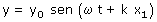
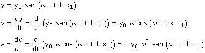
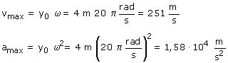

b) Si en una onda elástica se fija un valor para x, la ecuación de onda se convierte en la ecuación de posición del movimiento armónico transversal del punto situado en dicha abscisa.  Derivando esta expresión respecto al tiempo resulta:  Los valores máximos de velocidad y aceleración son:  Observa que la aceleración se ha tomado sin signo porque se sobreentiende que el valor máximo de una magnitud se refiere al módulo de esta |